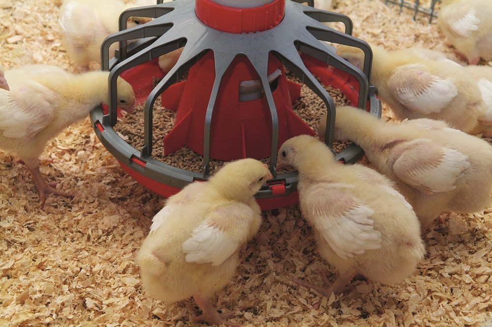
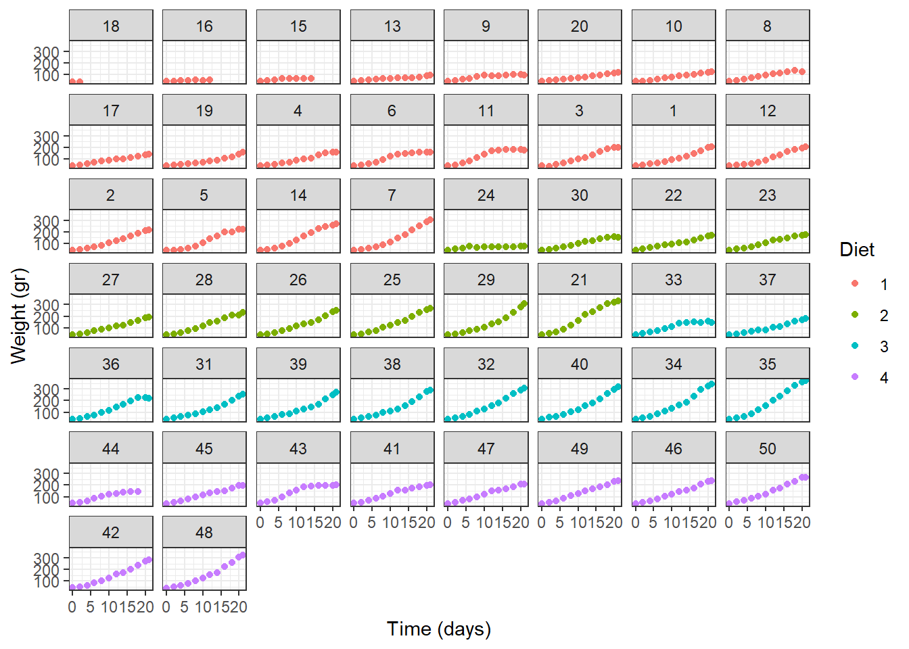
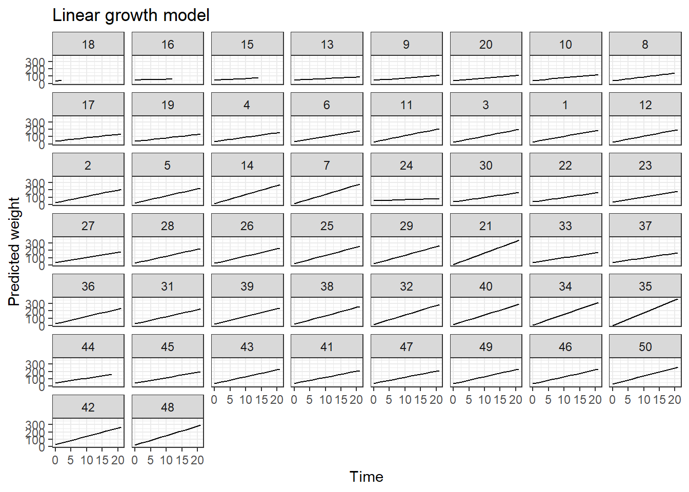
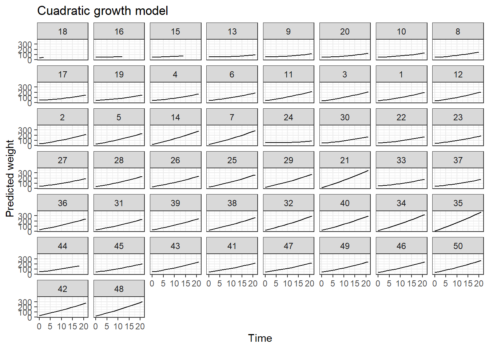
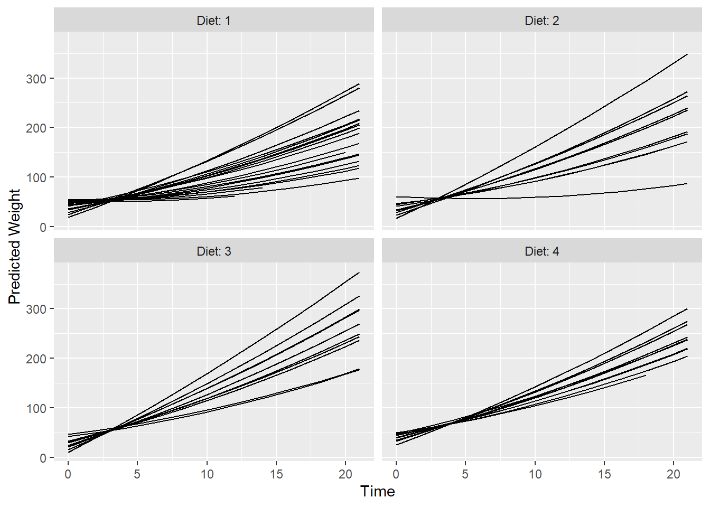
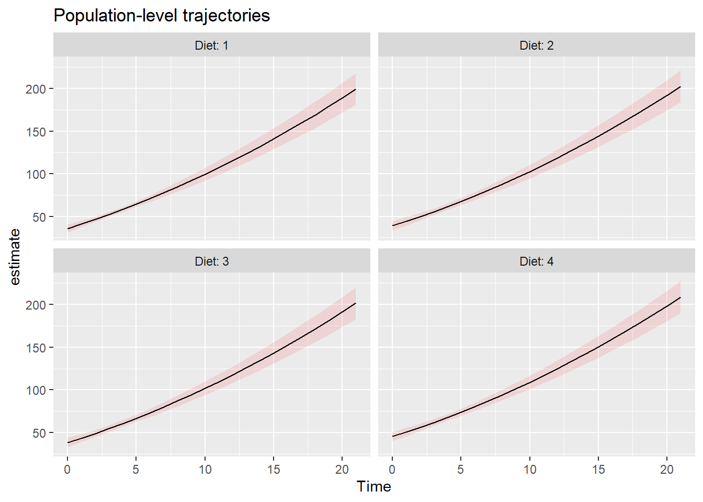

14 Paquete marginaleffects
En este capítulo se muestran algunas de las utilidades del paquete marginaleffects de Arel-Bundock (2025). Se le recomienda al lector visitar la página oficial del paquete para ver más utilidades.
Ejemplo ChickWeight lineal

En este ejemplo vamos a construir un modelo mixto para explicar el peso de unos pollitos en función de la edad y la dieta que recibieron (cuatro niveles). A continuación se muestra un diagrama de dispersión que relaciona el peso, la edad y la dieta.
Para hacer el gráfico de dispersión.
library(ggplot2)
ggplot(data = ChickWeight, aes(x = Time, y = weight, col=Diet)) +
geom_point() +
theme_bw() +
facet_wrap(~ Chick) +
labs(y = "Weight (gr)", x = "Time (days)") +
theme(legend.position = "right")
De la figura anterior se observa claramente que a medida que aumenta el tiempo, el peso de cada pollito aumenta. Las trayectorias de la evolución del peso corporal parecen tener un patrón lineal o cuadrático del tiempo.
En este ejemplo vamos a ajustar un modelo con respuesta normal, efectos fijos debido al tiempo y a la dieta. Adicionalmente vamos a incluir un intercepto aleatorio para que la curva de crecimiento de cada pollito pueda comenzar a una altura diferente y una pendiente aleatoria para que el modelo tenga una pendiente de crecimiento diferente para cada pollito.
Vamos a explorar el modelo fit1, de él queremos conocer los valores de los efectos fijos del modelo, para eso vamos a usar el siguiente código:
## Linear mixed model fit by REML ['lmerMod']
## Formula: weight ~ 1 + Time + Diet + (1 + Time | Chick)
## Data: ChickWeight
##
## REML criterion at convergence: 4803.8
##
## Scaled residuals:
## Min 1Q Median 3Q Max
## -2.7617 -0.5758 -0.0353 0.4789 3.5025
##
## Random effects:
## Groups Name Variance Std.Dev. Corr
## Chick (Intercept) 153.87 12.40
## Time 14.13 3.76 -0.98
## Residual 163.45 12.78
## Number of obs: 578, groups: Chick, 50
##
## Fixed effects:
## Estimate Std. Error t value
## (Intercept) 26.3561 2.2907 11.506
## Time 8.4438 0.5403 15.628
## Diet2 2.8387 2.3627 1.201
## Diet3 2.0045 2.3627 0.848
## Diet4 9.2548 2.3657 3.912
##
## Correlation of Fixed Effects:
## (Intr) Time Diet2 Diet3
## Time -0.796
## Diet2 -0.351 -0.004
## Diet3 -0.351 -0.004 0.344
## Diet4 -0.350 -0.005 0.343 0.343Ahora vamos a obtener los efectos aleatorios predichos. Para hacer esto podemos usar la instrucción ranef(fit1), sin embargo eso nos generará una tabla con 50 filas y dos columnas (una para \(\tilde{b}_0\) y otra para \(\tilde{b}_1\)). Por esa razón vamos a pedir solo los efectos aleatorios para los primeros 5 pollitos así:
## (Intercept) Time
## 18 4.200608 -1.313406
## 16 23.007170 -7.515643
## 15 20.118951 -6.323441
## 13 19.811393 -6.321970
## 9 18.095274 -5.288967Usando la información de las salidas anteriores, vamos a predicir dos valores del peso para el pollito 13 que estuvo bajo la dieta 1. La primera predicción será en el pasado cuando \(Time=19\) y la otra será para el futuro cuando \(Time=22\). Para obtener estas dos predicciones debemos usar las estimaciones de los efectos fijos obtenidas con el summary y agregar los efectos aleatorios del pollito 13. Las operaciones para obtener las dos estimaciones se muestran a continuación.
\[\begin{align} \widehat{Weight}_{13,19} &= 26.356 + 8.444 \times 19 + 19.811393 -6.321970 \times 19 \\ &= 86.48596 \end{align}\]
\[\begin{align} \widehat{Weight}_{13,22} &= 26.356 + 8.444 \times 22 + 19.811393 -6.321970 \times 22 \\ &= 92.85205 \end{align}\]
Los resultados anteriores se pueden obtener automáticamente con la función predictions() de la siguiente manera.
##
## Chick Diet Time Estimate Std. Error z Pr(>|z|) S 2.5 % 97.5 %
## 13 1 19 86.5 8.55 10.11 <0.001 77.4 69.7 103
## 13 1 22 92.8 10.16 9.14 <0.001 63.8 72.9 113
##
## Type: responseEn la columna Estimate de la salida anterior vemos que los valores coinciden con los obtenidos manualmente.
Ahora vamos a calcular los pesos estimados para todos los pollitos y luego vamos a dibujar las curvas crecimiento.
pred1 <- predictions(model=fit1)
ggplot(pred1, aes(x=Time, y=estimate)) +
geom_line() +
theme_bw() +
facet_wrap(~ Chick) +
labs(y = "Predicted weight",
x = "Time",
title = "Linear growth model")
Para ver qué tan bien el modelo fit1 logra predecir vamos a calcular la correlación entre \(Weight\) y \(\widehat{Weight}\) así:
## [1] 0.9853747De la salida anterior vemos que el valor de correlación es muy cercano a uno.
Ejemplo ChickWeight cuadrático
En este ejemplo vamos a repetir el modelo anterior pero incluyendo el tiempo como un polinomio de grado dos y la dieta. Los efectos aleatorios serán intercepto y pendiente aleatorias para tiempo solamente.
Vamos a explorar el modelo fit2, de él queremos conocer los valores de los efectos fijos del modelo, para eso vamos a usar el siguiente código:
## Linear mixed model fit by REML ['lmerMod']
## Formula: weight ~ 1 + Time + I(Time^2) + Diet + (1 + Time | Chick)
## Data: ChickWeight
##
## REML criterion at convergence: 4712.4
##
## Scaled residuals:
## Min 1Q Median 3Q Max
## -3.6455 -0.5485 -0.0788 0.5377 3.6067
##
## Random effects:
## Groups Name Variance Std.Dev. Corr
## Chick (Intercept) 155.37 12.465
## Time 13.57 3.684 -0.96
## Residual 133.71 11.563
## Number of obs: 578, groups: Chick, 50
##
## Fixed effects:
## Estimate Std. Error t value
## (Intercept) 34.79515 2.40098 14.492
## Time 5.73911 0.58860 9.750
## I(Time^2) 0.12960 0.01243 10.427
## Diet2 3.12748 2.39091 1.308
## Diet3 2.25608 2.39091 0.944
## Diet4 9.41353 2.39329 3.933
##
## Correlation of Fixed Effects:
## (Intr) Time I(T^2) Diet2 Diet3
## Time -0.812
## I(Time^2) 0.336 -0.440
## Diet2 -0.334 -0.010 0.013
## Diet3 -0.334 -0.010 0.013 0.343
## Diet4 -0.335 -0.008 0.008 0.343 0.343Ahora vamos a obtener los efectos aleatorios predichos. Para hacer esto podemos usar la instrucción ranef(fit2), sin embargo eso nos generará una tabla con 50 filas y dos columnas (una para \(\tilde{b}_0\) y otra para \(\tilde{b}_1\)). Por esa razón vamos a pedir solo los efectos aleatorios para los primeros 5 pollitos así:
## (Intercept) Time
## 18 -0.3622672 -0.07953652
## 16 17.9443815 -6.53019008
## 15 17.0243979 -5.61622298
## 13 19.4103780 -6.35126669
## 9 19.7988881 -5.44115909Usando la información de las salidas anteriores, vamos a predicir dos valores del peso para el pollito 13 que estuvo bajo la dieta 1. La primera predicción será en el pasado cuando \(Time=19\) y la otra será para el futuro cuando \(Time=22\). Para obtener estas dos predicciones debemos usar las estimaciones de los efectos fijos obtenidas con el summary y agregar los efectos aleatorios del pollito 13. Las operaciones para obtener las dos estimaciones se muestran a continuación.
\[\begin{align} \widehat{Weight}_{13,19} &= 34.79515 + 5.73911 \times 19 + 0.12960 \times 19^2 + 19.4103780 -6.35126669 \times 19^2 \\ &= 89.36015 \end{align}\]
\[\begin{align} \widehat{Weight}_{13,22} &= 34.79515 + 5.73911 \times 22 + 0.12960 \times 22^2 + 19.4103780 -6.35126669 \times 22^2 \\ &= 103.4645 \end{align}\]
Los resultados anteriores se pueden obtener automáticamente con la función predictions() de la siguiente manera.
##
## Chick Diet Time Estimate Std. Error z Pr(>|z|) S 2.5 % 97.5 %
## 13 1 19 89.4 8.39 10.6 <0.001 85.5 72.9 106
## 13 1 22 103.5 10.01 10.3 <0.001 80.7 83.8 123
##
## Type: responseEn la columna Estimate de la salida anterior vemos que los valores coinciden con los obtenidos manualmente.
Ahora vamos a calcular los pesos estimados para todos los pollitos y luego vamos a dibujar las curvas crecimiento.
pred2 <- predictions(model=fit2)
ggplot(pred2, aes(x=Time, y=estimate)) +
geom_line() +
theme_bw() +
facet_wrap(~ Chick) +
labs(y = "Predicted weight",
x = "Time",
title = "Cuadratic growth model")
Para ver qué tan bien el modelo fit2 logra predecir vamos a calcular la correlación entre \(Weight\) y \(\widehat{Weight}\) así:
## [1] 0.988254De la salida anterior vemos que el valor de correlación es muy cercano a uno.
14.1 Ejemplo
Predicciones para cada pollito pero diferenciando por la variable dieta:
pred <- predictions(fit2)
ggplot(pred, aes(Time, estimate, level = Chick)) +
geom_line() +
ylab("Predicted Weight") +
facet_wrap(~ Diet, labeller = label_both)
Para hacer predicciones a nivel de población podemos usar nuevamente la función ´predictions()´ pero sin indicar un pollito en particular. A continuación el código.
pred <- predictions(model=fit2,
newdata = datagrid(Diet=1:4,
Time=0:21))
ggplot(pred, aes(x = Time, y = estimate, ymin = conf.low, ymax = conf.high)) +
geom_ribbon(alpha = .1, fill = "red") +
geom_line() +
facet_wrap(~ Diet, labeller = label_both) +
labs(title = "Population-level trajectories")
Vamos a explorar los valores del objeto ´pred´ con el cual se hizo la figura anterior.
##
## Diet Time Estimate Std. Error z Pr(>|z|) S 2.5 % 97.5 %
## 1 0 36.0 2.40 15.0 <0.001 166.1 31.3 40.7
## 1 1 41.2 1.96 21.0 <0.001 323.7 37.3 45.0
## 1 2 46.6 1.61 28.9 <0.001 609.7 43.4 49.8
## 1 3 52.3 1.42 36.8 <0.001 984.3 49.5 55.1
## 1 4 58.3 1.44 40.4 <0.001 Inf 55.5 61.1
## --- 78 rows omitted. See ?print.marginaleffects ---
## 4 17 168.9 7.45 22.7 <0.001 375.0 154.2 183.5
## 4 18 178.5 7.97 22.4 <0.001 366.7 162.8 194.1
## 4 19 188.3 8.49 22.2 <0.001 359.9 171.7 204.9
## 4 20 198.4 9.01 22.0 <0.001 354.2 180.8 216.1
## 4 21 208.8 9.55 21.9 <0.001 349.6 190.1 227.5
## Type: response